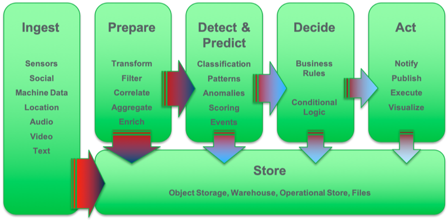

Process continuous streaming events
One of the essential elements of modern event-driven solutions is the ability to process continuous event streams to derive real time insights and intelligence.
In this section we will take more detailed look at what this means in terms of required capabilities and the technology choices that are available to provide these as part of the Event Driven Architecture.
Streaming analytics (real-time analytics)
Streaming analytics provides the capabilities to look into and understand the events flowing through unbounded real-time event streams. Streaming applications process the event flow and allow data and analytical functions to be applied to information in the stream. Streaming applications are written as multistep flows across the following capabilities:
- Ingest many sources of events.
- Prepare data by transforming, filtering, correlating, aggregating on some metrics and leveraging other data sources for data enrichment.
- Detect and predict event patterns using scoring and classification.
- Decide by applying business rules and business logic.
- Act by directly executing an action, or in event-driven systems publishing an event notification or command.

Basic streaming analytics capabilities
To support the real-time analytical processing of the unbounded event streams, the following capabilities are essential to the event stream processing component:
- Continuous event ingestion and analytical processing.
- Processing across multiple event streams.
- Low latency processing, where data do not have to be stored.
- Processing of high-volume and high-velocity streams of data.
- Continuous query and analysis of the feed.
- Correlation across events and streams.
- Windowing and stateful processing.
- Query and analysis of stored data.
- Development and execution of data pipelines.
- Development and execution of analytics pipelines.
- Scoring of machine learning models in line in the real-time event stream processing.
Support for real-time analytics and decision-making
Beyond the basic capabilities, consider supporting other frequently-seen event stream types and processing capabilities in your event stream processing component. By creating functions for these stream types and processes in the streaming application code, you can simplify the problem and reduce the development time.
These capabilities include the following:
- Geospatial
- Location-based analytics
- Geofencing & map matching
- Spatio-temporal hangout detection
- Time series analysis
- Timestamped data analysis
- Anomaly detection & forecasting
- Text analytics
- Natural Language Processing & Natural Language Understanding
- Sentiment analysis & entity extraction
- Video and audio
- Speech-to-text conversion
- Image recognition
- Rules
- Decisions described as business logic
- Complex Event Processing (CEP)
- Temporal pattern detection
- Entity Analytics
- Relationships between entities
- Probabilistic matching
Application programming languages and standards
Few standards exist for event stream applications and languages. Typically, streaming engines have provided language-specific programming models tied to a specific platform. The commonly used languages include the following: * Python supports working with data and is popular with data scientists and data engineers. * Java is the pervasive application development language. * Scala adds functional programming and immutable objects to Java.
Other platform specific languages have emerged when real-time processing demands stringent performance requirements real time processing performance is required.
More recently Google initiated the Apache Beam project https://beam.apache.org/ to provide a unified programming model for streaming analytics applications.
Beam is a higher-level unified programming model that provides a standard way of writing streaming analytics applications in many supported languages, including Java, Python, Go and SQL.
Streaming analytics engines typically support this unified programming model through a Beam runner that takes the code and converts it to platform-native executable code for the specific engine.
See https://beam.apache.org/documentation/runners/capability-matrix/ for details of supporting engines and the capabilities. Leading engines include Google Cloud DataFlow, Apache Flink, Apache Spark, Apache Apex, and IBM Streams.
Run time characteristics
In operational terms streaming analytics engines must receive and analyze arriving data continuously:
- The "Feed Never Ends"
- The collection is unbounded.
-
Not a request response set based model.
-
The "Firehose Doesn’t Stop"
- Keep drinking and keep up.
- The processing rate is greater than or equal to the feed rate.
- The analytics engine must be resilient and self-healing.
These specialized demands and concerns, which are not found in many other information processing environments, have led to highly-optimized runtimes and engines for stateful, parallel processing of analytical workloads across multiple event streams.
Products
Streaming Analytics
The market for streaming analytics products is quite confused with lots of different offering and very few standards to bring them together. The potential product selection list for the streaming analytics component in the event driven architecture would need to consider:
Top Open Source projects: * Flink - real time streaming engine, both real time and batch analytics in one tool. * Spark Streaming - micro batch processing through spark engine. * Storm - Has not shown enough adoption. * Kafka Streams - new/emerging API access for processing event streams in Kafka using a graph of operators
Major Cloud Platform Providers support: * Google Cloud DataFlow – proprietary engine open source streams application language ( Beam ) * Azure Stream Analytics – proprietary engine , SQL interface * Amazon Kinesis - proprietary AWS
IBM offerings * IBM Streams/streaming Analytics (High performing parallel processing engine for real time analytics work loads) * IBM Event streams (Kafka based event log/streaming platform)
Evaluation of the various options, highlights * The proprietary engines from the major providers, Google, MicroSoft, Amazon and IBM Streams continue to provide significant benefits in terms of performance and functionality for real time analysis of high volume realtime event streams. * Kafka streams provides a convenient programming model for microservices to interact with the event stream data, but doesnt provide the optimized stream processing engine required for high volume real time analytics.
Our decision for the Event Driven Architecture is to include:
- IBM streams as the performant, functionally rich real time event stream processing engine
- Event Streams (Kafka Streams), for manipulation of event streams within microservices
IBM streams also supports Apache Beam as the open source Streams Application language, which would allow portability of streams applications across, Flink, Spark, Google DataFlow...
Decision Insights
Decision insight is a stateful operator to manage business decision on enriched event linked to business context and business entities. This is the cornerstone to apply business logic and best action using time related business rules. See this note too
IBM [Operational Decision Manager Product documentation](https://www.ibm.com/support/knowledgecenter/en/SSQP76_8.9.1/com.ibm.odm.itoa.overview/topics/con_what_is_i2a.html